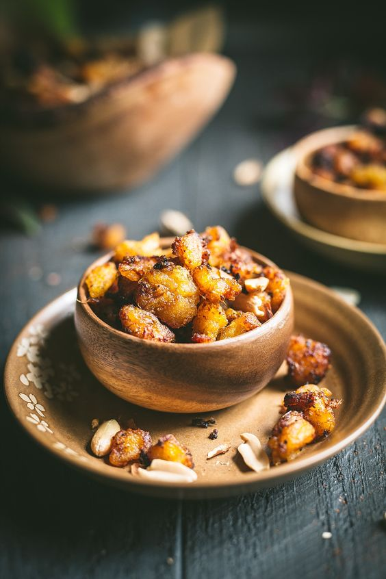

Kelewele

Description
Kelewele is essentially just fried plantains that have been seasoned with a variety of spices and served alongside roasted groundnuts or even just on their own.
Ingredients
- Ripe Plantains
- 1/2 piece Raw Ginger
- 1/2 White Onion
- 2 cloves Garlic
- 1 tsp Nutmeg
- 1 tsp Cayenne Pepper
- 1 tsp Anise Seed
- 1 tsp Salt
- Oil for frying
Steps
- Using a sharp knife, cut a shallow line down the length of the plantain and peel back the skin.
- Chop the plantain into small cubes of about 1 inch size.
- Grate the ginger into a large bowl then add in chopped garlic and chopped onions.
- Now in the bowl blend in your cayenne pepper, anise seed, nutmeg and salt. Mix well.
- Next add in your plantain cubes and toss to coat in the spice mix. Leave to rest for 30 minutes.
- In a deep skillet, add enough oil to slightly submerge the plantains and heat to 350 degrees F.
- Separate the plantain into batches so that each lot can fry without touching one another. This is crucial to achieving the right texture.
- Now for each batch, add into the skillet to brown, turning once during the process. It should take about 5 minutes per batch.
- Use a strainer ladle to remove the plantains from the pan and rest on a plate covered with paper towels.
- Lightly dab the plantains with paper towels to soak up any excess oil and serve immediately.
- Enjoy!